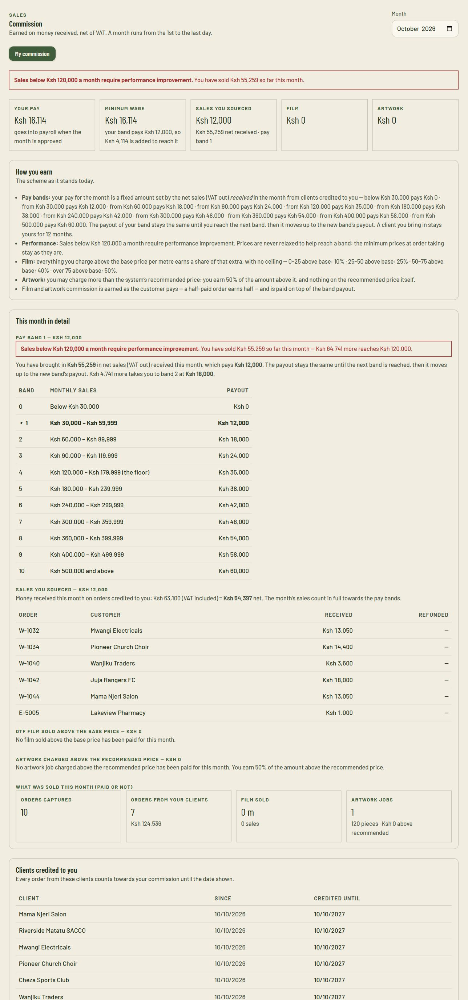
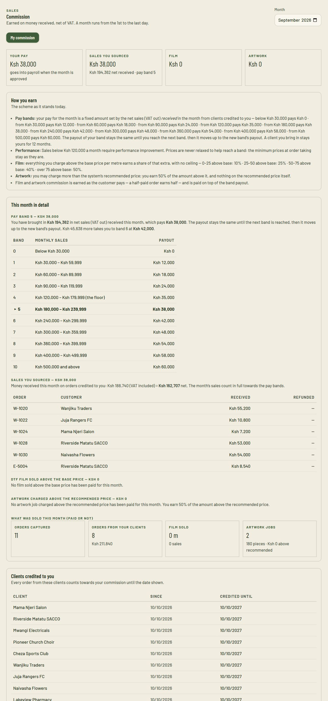
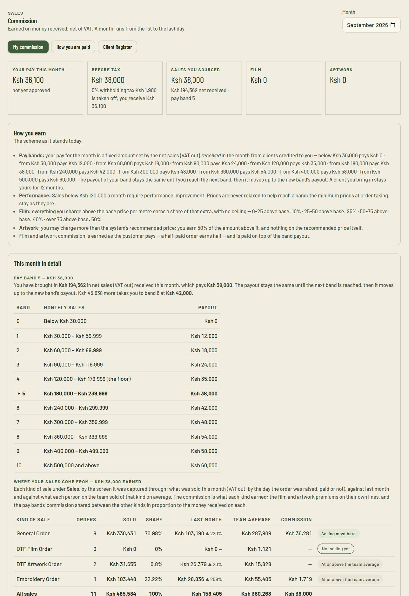

Employee & sales person information guide · October 2026
Your pay at GLM Branding
How pay works for people who sell for GLM — employees on the sales pay bands and sales persons paid as contractors: how an order becomes yours, the pay bands, the monthly target, the film and artwork extras, what is taken off (payroll deductions, or withholding tax), and what to expect each month.
The figures in this guide are the current settings in the GLM POS & Accounting system; the How you are paid tab under Commission always shows what is in force now. Management may review them; the date above shows when this guide was issued. This guide explains how the system works and does not replace your contract of employment.
1The short version
Read this page and you know how you are paid. The rest of the guide explains each point.
1
Your pay for a month depends on how much your customers pay us that month
11
pay bands — from the minimum wage up to KES 60,000 a month
120,000
monthly sales to reach band 4 — and the line below which we help you improve
Your pay is the payout of the band your month's sales reached. A step, not a slice: stay in a band and the payout stays the same; reach the next band and it moves up to that band's payout.
Employees on the sales bands are never paid less than the minimum wage (KES 16,113.75 a month at present). If your band payout is lower, the minimum wage is paid instead. Sales persons paid as contractors are paid on the same bands, but the minimum wage is not guaranteed unless management switches it on for you (section 9).
Sales below KES 120,000 in a month require performance improvement. You will see a notice on your own screen, and the managers who run commission see it too.
Film extras are paid on top when you charge above the base price per metre. Artwork orders are priced by you (the price of the print, the heat press and any garment we supply, each on its own) — there is no recommended price, so no artwork premium (section 7).
Employees are paid on the 5th of every month — for the month before (September's pay is paid on 5 October). The month is closed and approved before then, and your pay goes through payroll. PAYE, NSSF, SHIF and the housing levy come off, as for every employee, and you see them on your payslip. Sales persons are paid once the month is approved, less withholding tax, and are not on payroll (section 9).
Every figure traces to an order and a payment. You can see exactly how your month was made up in the system, any time.
Who this guide is for
There are two kinds of reader, and the guide says which is which where they differ.
Employees on the sales pay bands — management ticks Paid on sales bands on your staff record. Your pay goes through payroll.
Sales persons — people GLM gives orders to who are not on the staff payroll. You are paid as a contractor, with withholding tax (section 9).
If you are on a fixed salary (for example office or finance staff), your pay is set by your contract and this guide does not change it. GLM no longer pays separate freelance accounts: those who sold that way are sales persons now.
2How a month works
1 · SellYou bring in work and capture orders all month
2 · Customers payOnly money received in the month counts
3 · Month closesThe last day of the month fixes your sales
4 · ApprovedA manager approves the month
5 · Payday: the 5thPaid through payroll, with deductions
Because pay depends on the whole month, your pay for a month is known when that month has ended and been approved, not before — and it is paid on the 5th of the following month. Until then the system shows your sales so far and the band you are in. Each month stands on its own: there is no carrying forward or averaging from one month to the next.
3What counts as your sales
Your sales are the money customers have paid in the month, with VAT taken out, on orders credited to you.
Counts towards your month
Does not count
Money received in that month on orders from clients credited to you — whoever captured the order.
Film and artwork orders you captured.
Deposits and part-payments, in the month each arrives.
Everything at its net value: the VAT (16%) is taken out.
An order that has been raised but not yet paid — it counts in the month the money arrives.
House sales (walk-ins and clients the shop already had), where no sales person is credited.
Orders the front office allocated to GLM (the shop's own sales) or to another sales person.
Money that is refunded or taken back by a credit note — it reduces the month it is refunded in.
Worked example
A customer you brought in orders printing worth KES 58,000 (VAT included). That is KES 58,000 ÷ 1.16 = KES 50,000 of sales. If they pay KES 29,000 on 28 September and the balance on 4 October, then KES 25,000 counts in September and KES 25,000 counts in October. Collecting balances before month-end moves sales into the month you want.
How an order becomes yours
There is one price list and one place to take an order for everybody. Whose sale it is — GLM's own, or a sales person's — is decided on the order itself:
The front office allocates every order they capture: to GLM (the shop's own sale, credited to nobody) or to a sales person — you. They cannot take the order until they have chosen. An order allocated to you counts towards your month and your target, and the film and artwork extras on it are yours.
You can capture your own orders when the front office is not doing it. An order you capture is credited to you; there is nothing to choose. Management can switch this off for you (Commission → Pay details → Captures own orders); the front office then captures for you, and can always capture for you either way.
If an order went to the wrong place — to GLM when it was yours, or to someone else — tell the front office or a manager straight away. You cannot change an allocation yourself; it has to be corrected in the system's records, because your pay is worked out from them.
Your Client Register. Under Commission → Client Register you keep your own clients (name and phone). An order for a client in your register is credited to you whoever captures it, and the front office, who capture for you, can use it. Other sales persons cannot see your register; the front office and the managers who run commission can.
Clients credited to you
When you bring in a new client through your own network, tick "[your name] brought this client in — credit them for 12 months" when you capture the first order. The client then stays credited to you for 12 months, and every order from them counts towards your sales, whoever captures it.
A client belongs to one person. If someone else already has the client, the system tells you who — you cannot claim them.
Use it honestly: it is for clients you genuinely brought. Walk-ins and clients the shop already had are house sales and earn no sourcing credit. The system records who claimed each client, and when.
4The pay bands
Find the band your month's net sales reached. That band's payout is your pay for the month, and never less than the minimum wage.
Band
Monthly sales (net of VAT)
Band payout
You are paid
0
Below 30,000
0
16,113.75 (minimum wage)
1
30,000 – 59,999
12,000
16,113.75 (minimum wage)
2
60,000 – 89,999
18,000
18,000
3
90,000 – 119,999
24,000
24,000
4
120,000 – 179,999 (the monthly target)
35,000
35,000
5
180,000 – 239,999
38,000
38,000
6
240,000 – 299,999
42,000
42,000
7
300,000 – 359,999
48,000
48,000
8
360,000 – 399,999
54,000
54,000
9
400,000 – 499,999
58,000
58,000
10
500,000 and above
60,000
60,000
Below 60,000
16,114
60,000+
18,000
90,000+
24,000
120,000+
35,000
180,000+
38,000
240,000+
42,000
300,000+
48,000
360,000+
54,000
400,000+
58,000
500,000+
60,000
Your pay by monthly sales. Grey is the minimum wage; gold is the monthly target of KES 120,000.
A step, not a slice
The payout is the whole amount for the band, not a percentage of your sales. At KES 119,999 of sales you are paid 24,000; at KES 120,000 you are paid 35,000. The extra KES 1 of sales moved you up KES 11,000.
That is why the last few thousand shillings of a month matter: a payment collected on the 30th can lift you into the next band.
The payout you have earned in a band continues to apply until you reach the next band; there is nothing to lose by selling more.
Good to know
Because the minimum wage (16,113.75) is higher than the payouts of bands 0 and 1, your pay is the minimum wage until your month's sales reach KES 60,000. From KES 60,000 the band payout is higher and becomes your pay.
5The minimum wage guarantee
This applies to employees on the sales bands. A sales person paid as a contractor has it only if management has switched it on for them (section 9).
If the band payout for your month is lower than the minimum wage, the minimum wage is paid as your pay for the month. The system adds the difference automatically; you will see it on your screen as Minimum wage with a note such as "your band pays 12,000, so 4,114 is added to reach it".
This applies even in a month with no sales at all.
The minimum wage is a setting that only an Admin can change. 16,113.75 is the figure in use now; management confirms the rate that applies to your job.
6The monthly target: KES 120,000
Sales below KES 120,000 in a month require performance improvement. KES 120,000 is band 4 — the level the shop is built around.
What you will see
A red notice at the top of your own commission screen whenever your sales for the month are below the target. During the month it also tells you how much more reaches KES 120,000.
The managers who run commission see the same month marked needs improvement once the month has closed below the target.
What it means
It is a flag, not a deduction: it does not reduce your pay — your pay is set by the bands and the minimum wage above. What follows a month below target (a conversation, a plan, support or training) is for your supervisor and management to arrange under your terms of employment. The system only records it.
Ways to reach the target
Bring in new clients and claim them when you capture their first order — repeat orders then count for 12 months.
Go back to your existing clients: repeat orders are the easiest sales.
Collect deposits and balances before the month ends — only money received counts.
Offer the extras: embroidery, film and artwork work counts towards your sales and earns extras on top.
Quote clearly and sell at the right price. Prices are never relaxed to help you reach a band.
7Film and artwork extras
On top of the band payout, you are rewarded for charging above the price floor on DTF film and artwork. These extras are in addition to your pay; they are earned as the customer pays (a half-paid order earns half).
DTF film — by the metre
The base price is the minimum price per metre (KES 400 at present). Everything you charge above it earns a share, in slices of the extra per metre — the more you earn above base, the bigger the share on the higher slice:
Extra above base, per metre
Share paid
First 25 (0 – 25)
10%
25 – 50
25%
50 – 75
40%
Over 75
50%
Example
You sell 10 metres at KES 600 per metre. That is KES 200 above base per metre: 25 × 10% + 25 × 25% + 25 × 40% + 125 × 50% = KES 81.25 per metre. For 10 metres, with the VAT taken out (÷ 1.16): about KES 700. At KES 450 per metre (KES 50 above base) the same job earns only about KES 75.
DTF artwork — priced by you
On a DTF or UV DTF artwork order you arrange the artworks on the film, note the length of film used, and list them with the price of one artwork (the print), the heat press price and, when we supply the garment, the garment from stock at the stock price list's price. There is no recommended price to compare it with, so no artwork premium is paid and no price needs approval: the order simply counts towards your sales like any other (money received, net of VAT, in the month — section 3). What you charge is your decision, so charge what the work is worth. The film is tracked only by the length used.
8From your pay to what you take home
This section is for employees paid through payroll. Sales persons paid as contractors see section 9.
Your pay for the month is your gross pay. As for every employee, statutory deductions come off before you are paid. They are worked out by the payroll and listed on your payslip: NSSF (6%), SHIF (2.75%), the Affordable Housing Levy (1.5%) and PAYE (graduated, after your personal relief). The company pays its own matching NSSF and housing-levy contributions on top; they are not taken from you.
Gross pay
NSSF
SHIF
Housing levy
PAYE
Take-home
16,113.75 (minimum wage)
966.83
443.13
241.71
0.00
14,462.09
24,000.00
1,440.00
660.00
360.00
0.00
21,540.00
35,000.00 (band 4)
2,100.00
962.50
525.00
1,853.13
29,559.38
38,000.00
2,280.00
1,045.00
570.00
2,614.85
31,490.15
42,000.00
2,520.00
1,155.00
630.00
3,691.85
34,003.15
48,000.00
2,880.00
1,320.00
720.00
5,307.35
37,772.65
54,000.00
3,240.00
1,485.00
810.00
6,922.85
41,542.15
60,000.00
3,600.00
1,650.00
900.00
8,538.35
45,311.65
Examples use the payroll rates in the system for October 2026, for pay with no extras and no other allowances. Your payslip shows your own figures; statutory rates can change, and the payroll always uses the rates in force at the time.
Film and artwork extras form part of your gross pay for the month and are taxed with it.
At the end of the year you can ask finance for your P9 (tax deduction card), which adds up the year's pay and tax month by month.
9Sales persons: paid as contractors
If you sell for GLM but are not on the staff payroll, this section is how you are paid. The pay is worked out in the same way as for an employee — the same bands, the same film and artwork extras, the same monthly target — and then withholding tax is taken off the month's total.
Employee on the sales bands
Sales person (contractor)
How you are paid
Through payroll
Directly — M-Pesa to your phone, or cash, bank or cheque with a reference. Not on payroll.
What comes off
PAYE, NSSF, SHIF and the housing levy
Withholding tax on the whole month's total — 5% unless management has set your own rate (0% with an exemption certificate). GLM takes off nothing else.
Minimum wage
Guaranteed every month
Not guaranteed — unless management switches Top a month up to the minimum wage on for you
When
Payday, the 5th
After the month is over and a manager has approved it. Management will tell you the usual pay date.
Your statement shows
Gross pay and deductions on the payslip
Before tax, the tax withheld and what you receive
Tax paperwork
P9 at year end
A withholding-tax statement for each month and for the year, for your own tax return
What is in your month's total
The band payout for your month's net sales (section 4) — the step your sales reached.
The film and artwork extras (section 7), earned as customers pay.
The monthly target (section 6) applies to you too: a month below KES 120,000 is flagged on your screen as needing improvement. It is a flag, not a deduction.
Orders count as in section 3: money received in the month, net of VAT, on orders allocated to you or captured by you, and on your clients.
Withholding tax, worked through
Your month's total (before tax)
Tax withheld (5%)
You receive
12,000 (band 1)
600.00
11,400.00
18,000 (band 2)
900.00
17,100.00
24,000 (band 3)
1,200.00
22,800.00
35,000 (band 4 — the monthly target)
1,750.00
33,250.00
38,000 (band 5)
1,900.00
36,100.00
48,000 (band 7)
2,400.00
45,600.00
60,000 (band 10)
3,000.00
57,000.00
At the standard 5%. Film and artwork extras are part of the total and are taxed with it. Your own rate, if you have one, is shown on your screen.
What withholding tax is
It is not an extra tax on top. It is an advance towards your own income tax: GLM pays the amount withheld to KRA on your behalf, and you use the withholding-tax statement as a credit when you file your own return. You are responsible for your own tax returns and for any contributions you make yourself (for example NSSF or SHIF as a self-employed person). This guide explains how the system works; it is not tax advice — ask a tax adviser or KRA about your own position.
Your details matter
Management keeps your KRA PIN, National ID and M-Pesa number under Commission → Pay details. You can be paid without them, but without a KRA PIN the tax withheld cannot be certified to you, and without an M-Pesa number an M-Pesa payment cannot be sent. Give management any that are missing or changed.
If you hold a tax exemption certificate, give it to management so your own rate (0%) can be set.
When it starts
Contractor terms apply from the month management sets in the system; months before it are paid as they were before. Management will confirm the first month to you, and your contract with GLM says what else applies. If you used to be paid weekly as a freelance account, that arrangement has ended for the new months; weeks already earned are still paid and kept in the tax records.
10When and how you are paid
Employees on the sales bands: as below. Sales persons are paid as in section 9: once the month is over a manager approves it, then you are paid by M-Pesa to your phone (or by cash, bank or cheque with a reference), after the withholding tax. Your screen shows the month as not yet approved until then.
The month ends. The system fixes your sales for the month: money received, net of VAT, on orders credited to you.
A manager approves the month (Commission → Team & payouts). They see each person's sales, band, pay and any minimum-wage top-up, and any month below the target.
Your pay goes into payroll automatically — one payroll entry for you, dated the last day of that month, for your band payout (or the minimum wage if higher) plus your film and artwork extras.
You are paid on the 5th of the month, for the month before: your September pay is paid on 5 October, your October pay on 5 November, and so on. Your payslip lists the gross pay and every deduction. Managers approve the month before the 5th so that payroll is ready.
Your pay for a month is fixed once it is in payroll. If you believe something was wrong, raise it straight away (section 12) so it can be corrected in payroll.
11Your own screen: Commission
Open Commission in the menu (it shows only your own figures). The month at the top-right can be changed to look at earlier months.

Your commission screen part-way through a month: the notice that sales are below KES 120,000, Your pay (here the minimum wage, because the band pays less), the Minimum wage note, Sales you sourced and the band you are in, and a summary of the scheme under How you earn.Further down, This month in detail: the pay-band table with your band highlighted, how many more shillings reach the next band, and the list of orders — with the amount received on each — that make up your sales.

A full month: net sales of KES 194,362 reach band 5, so Your pay is KES 38,000. The same screen is there for every past month.

A sales person's screen for a full month: net sales of KES 194,362 reach band 5, so the total before tax is KES 38,000; the 5% withholding tax of KES 1,900 is taken off and Your pay this month — what you receive — is KES 36,100. It reads not yet approved until a manager approves the month.
Your pay — what goes into payroll for the month (or Your commission if you are not on the sales bands). For a sales person it is Your pay this month: what you receive, with the Before tax total and the tax withheld beside it.
Client Register — your own clients; add one by name and phone. How you are paid repeats the scheme as it stands today.
Sales you sourced and pay band — your net sales so far and the band they reach.
Film and Artwork — your extras for the month.
Clients credited to you (at the bottom) — each client and the date their credit to you ends.
12Rules of the road
Prices are protected. Minimum prices at order taking are never relaxed to help anyone reach a band. A discount above the standard ceiling needs supervisor approval; a lower artwork or embroidery price needs a manager's approval first.
No double credit. An order or a client is credited to one person only — one sales person or employee, or GLM itself, never two. The front office allocates each order once.
Capture honestly. If you capture your own orders, capture every one, with the right client and the right price. An order left off the system earns nothing and cannot be paid for.
Keep your details up to date (sales persons): KRA PIN, National ID and M-Pesa number, so your pay can be sent and the tax withheld can be certified to you.
Claim honestly. Claim a client only when you genuinely brought them. Claims are recorded with the date and who made them.
Money must be recorded. Only payments recorded in the system count; take payments through the order screen, not outside it.
Refunds count against the month they are made. A credit note or refund reduces your sales for that month.
If a figure looks wrong, talk to your supervisor or to finance straight away. Every figure traces to an order and a payment, so questions are quick to settle — and the system keeps a record of who recorded what.
13Questions people ask
My customer pays after the month ends. Which month does it count in?
The month the money is received. An order you took in September but that is paid in October counts in October.
If I fall to a lower band next month, do I lose what I earned?
No — each month stands alone. Your pay for a month is the band that month reached. A good month is not reduced by a weaker one, and a weak month does not use up an earlier good one.
Is KES 120,000 my salary?
No. It is the monthly sales target (band 4). The pay for reaching it is KES 35,000.
Can I earn more than KES 60,000?
The top band pays KES 60,000 for sales of KES 500,000 and above. Film and artwork extras come on top of that, and management can review the bands.
Who decides the bands, the target and the minimum wage?
Only an Admin can change them. A change applies to months that have not yet been approved; managers can see the figures but not change them.
Why does my pay show the same in a month of 20,000 and a month of 55,000?
Both are below KES 60,000, so you are paid the minimum wage (16,113.75) in both. From KES 60,000 the band payout is higher than the minimum wage and starts to rise.
The client accepted my quote at a lower price. What counts?
What counts is the order's money received, net of VAT, like any sale: if the quote was agreed at KES 5,850 instead of 6,300, KES 5,850 is the sale. A price agreed below the limit needs a manager's approval first, and only money the client pays to the company counts.
When is payday?
For employees, the 5th of every month, for the month just ended. For sales persons, once the month has been approved — management will tell you the usual date.
Am I an employee if I am a sales person?
No. A sales person is paid as a contractor, outside payroll: no PAYE, NSSF, SHIF or housing levy is taken by GLM, and withholding tax is taken instead. Your contract with GLM sets out the terms.
Why is what I receive lower than the band payout?
The withholding tax (5% at the standard rate) comes off the month's total. Your screen shows Before tax, the tax and what you receive. The tax is paid to KRA for you and counts towards your own income tax.
Can I get a tax statement?
Yes. Ask management for your withholding-tax statement — it lists each month's total, the tax withheld and what you received, for the month or the whole year, for your own return.
Is the minimum wage guaranteed to me as a sales person?
Not unless management switches it on for you. Without it, a month's pay is simply the band your sales reached (and nothing in a month with no sales).
Who captures my orders — the front office or me?
Either. The front office allocates the orders they capture to you, and you can capture your own unless management has switched that off for you. An order is yours only once it is allocated to you or captured by you.
An order of mine was allocated to GLM by mistake. What now?
Tell the front office or a manager at once. Pay is worked out from the system's record, so it has to be corrected there — you cannot change it yourself.
Where is my previous month's payslip?
Ask finance for your payslips and your P9; they are printed from the payroll.
14Acknowledgement
Please read this guide, ask your supervisor about anything unclear, then sign and return this page to management.
I have read and understood this guide on how my pay is calculated — the pay bands, the monthly target of KES 120,000, the film and artwork extras, how an order is allocated to me, and what is deducted.
I am (tick one): ☐ an employee paid through payroll on the sales bands (including the minimum wage guarantee) ☐ a sales person paid as a contractor, less withholding tax.